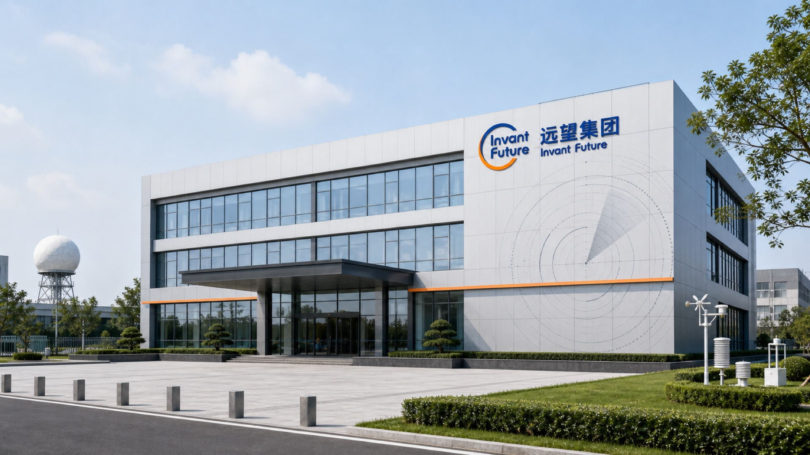
01 / 16BRAND
远望集团品牌设计
Brand Identity / 气象科技气象雷达 · 探测装备围绕集团业务结构与品牌定位，建立统一、清晰且具有延展性的视觉识别系统。
查看项目 →平面与视觉设计师 关注品牌、活动、空间与数字传播之间的连接。 通过清晰的视觉系统 让不同类型形成精准且有记忆点的表达。

围绕集团业务结构与品牌定位，建立统一、清晰且具有延展性的视觉识别系统。
查看项目 →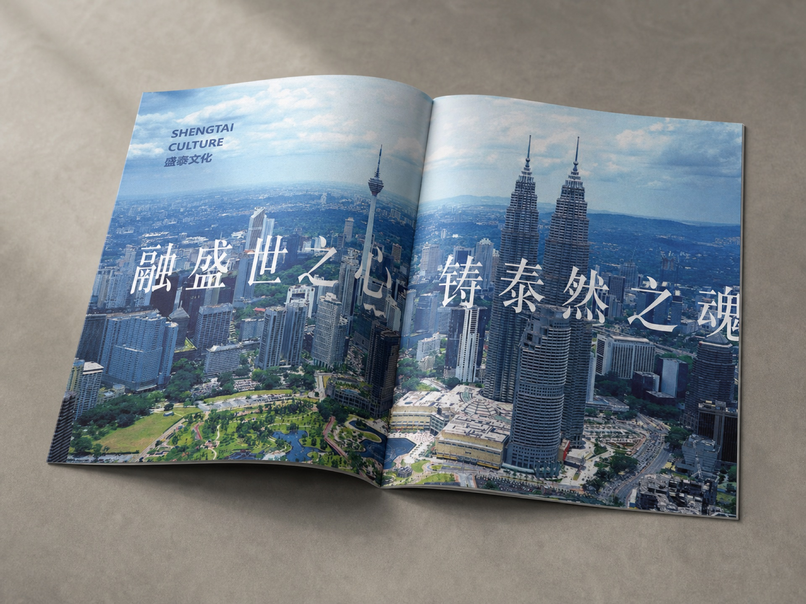
以企业文化、团队与发展历程为主线，呈现金融品牌画册的完整内容系统。
查看项目 →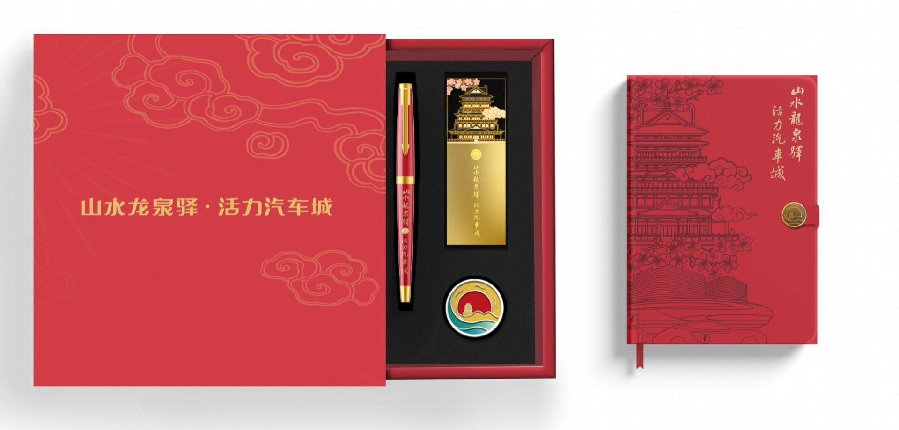
围绕城市文化与汽车产业记忆，建立覆盖礼盒、文具、伞具及随行物料的文创系统。
查看项目 →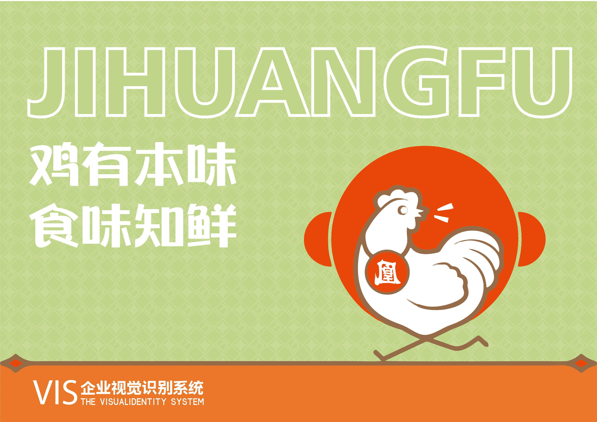
完整呈现品牌识别、包装推广、数字点餐与门店空间落地。
查看项目 →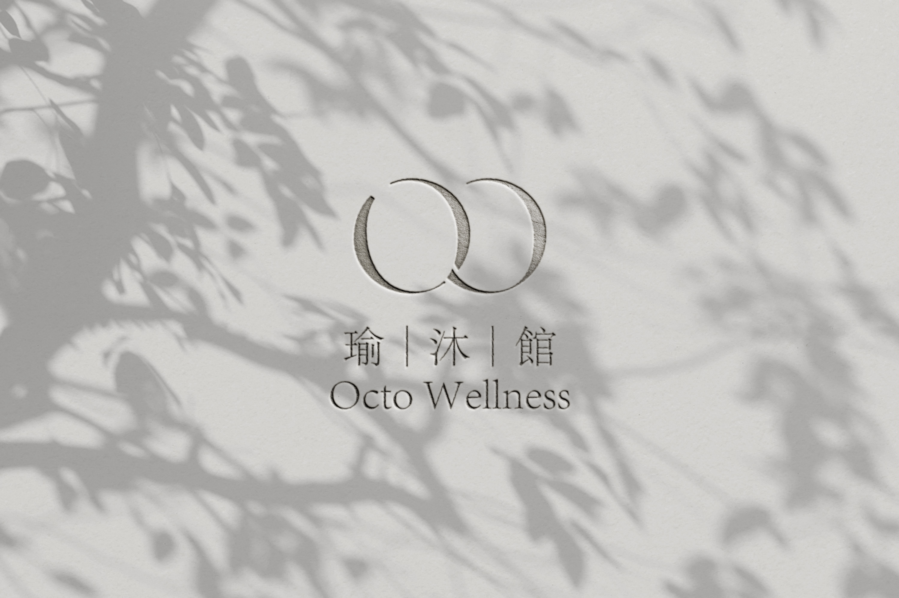
从品牌标志、色彩与图形规范延展至包装、门店空间和导视系统。
查看项目 →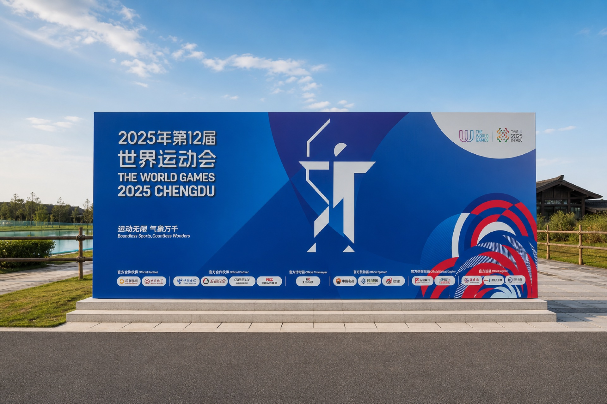
场馆主视觉、赛场空间、服务节点与现场氛围装置的完整赛事视觉系统。
查看项目 →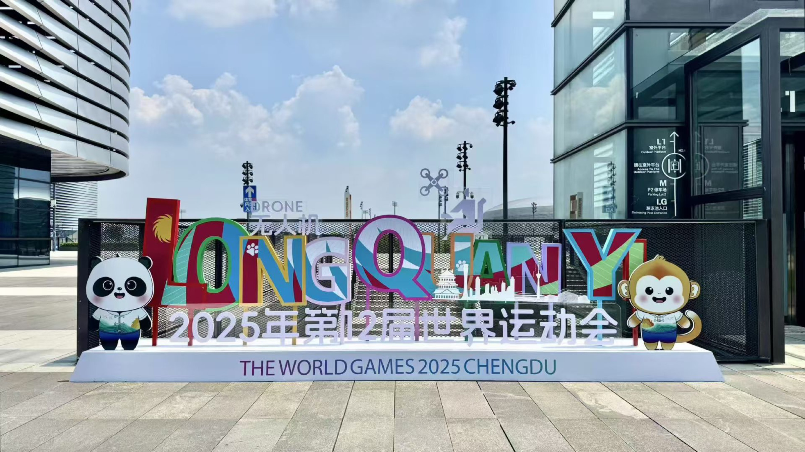
公共空间视觉、赛事主题装置与城市打卡节点，包含真实落地与空间效果预演。
查看项目 →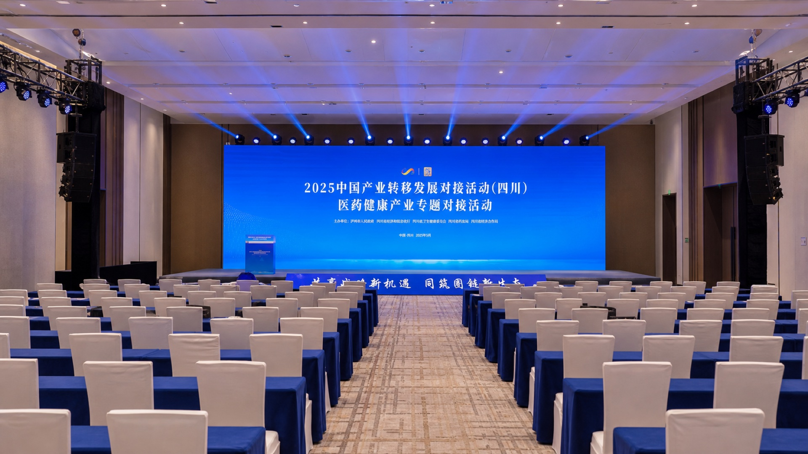
从园区导入、签到接待到主会场、导视与签约仪式的完整活动视觉落地。
查看项目 →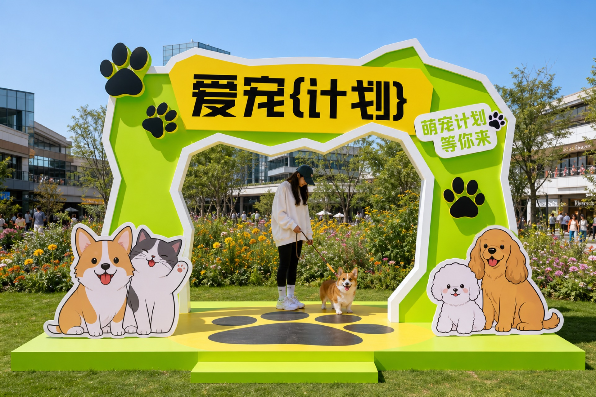
从公众号长图延展至入口、签到、舞台、导视与互动装置的完整活动视觉。
查看项目 →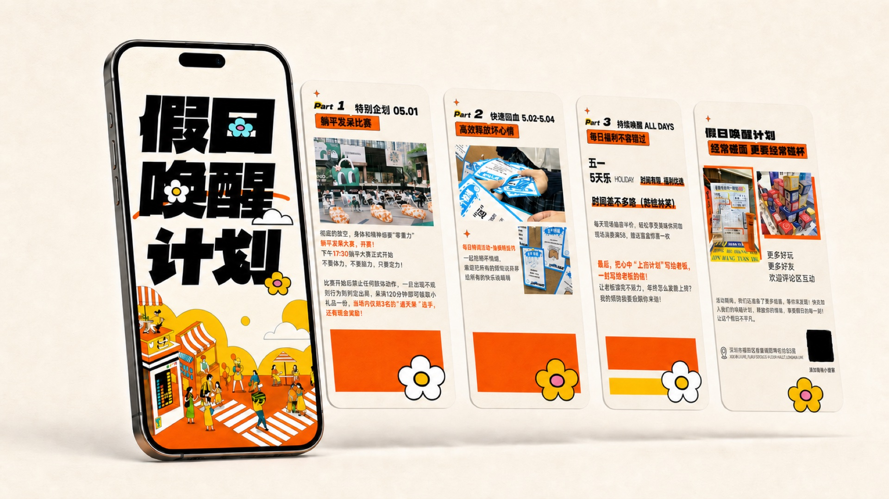
以橙黄黑视觉串联公众号长图、社交平台轮播、多设备传播与线下物料。
查看项目 →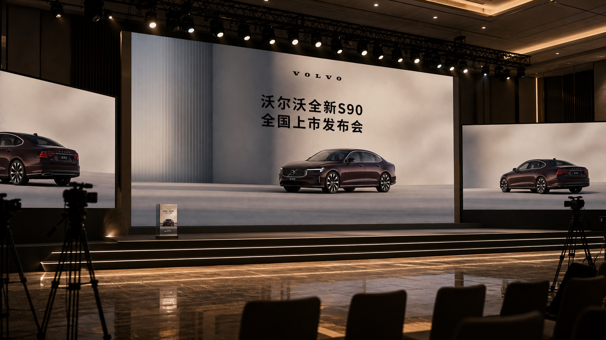
围绕全新 S90 上市发布会，整理主会场、签到接待、餐饮导视与邀请函等应用。
查看项目 →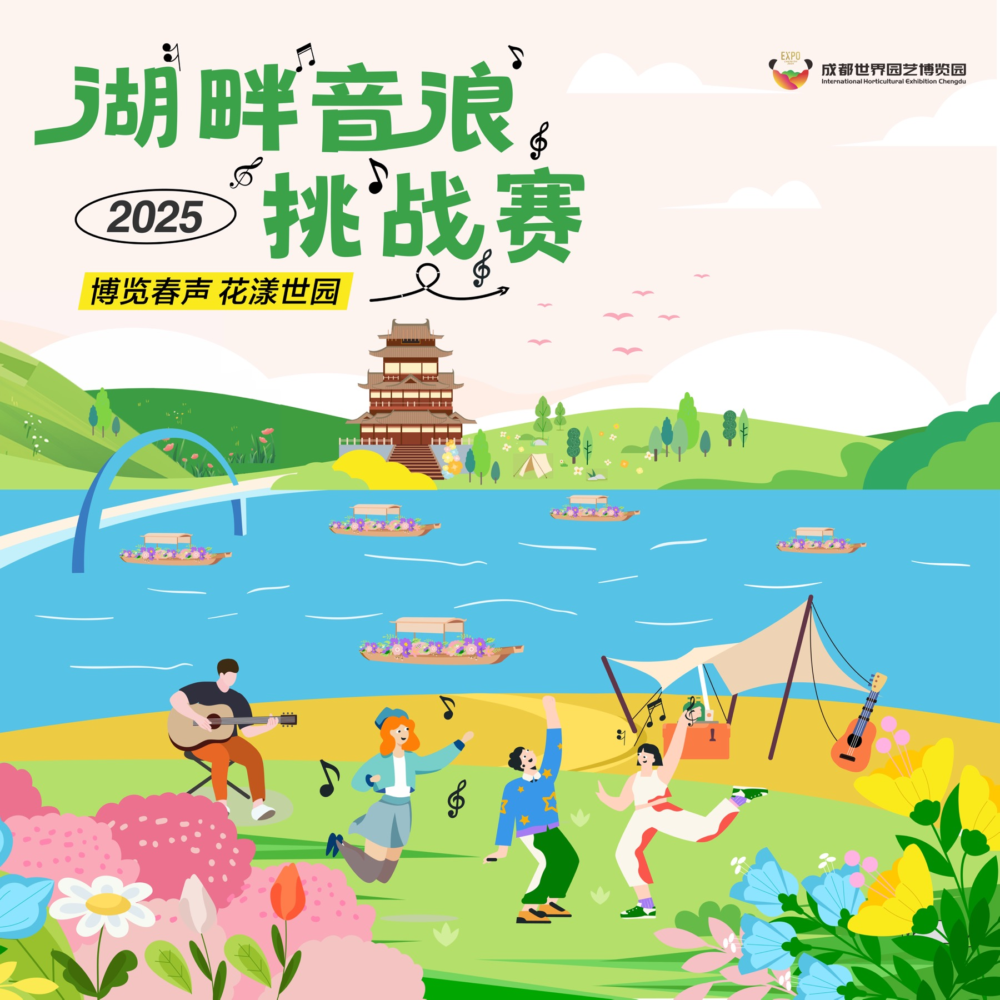
围绕湖畔音乐活动，完成主 KV、舞台背景、导视、打卡装置和园区场景设计。
查看项目 →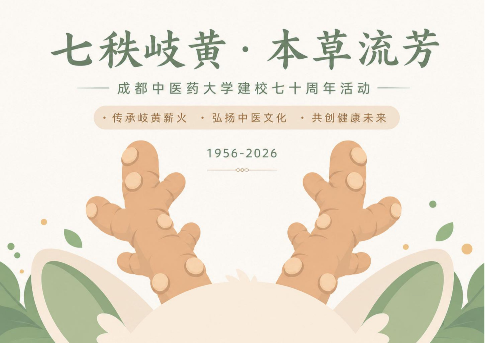
围绕"七秩岐黄·本草流芳"构建角色形象、动作、色彩与立体延展。
查看项目 →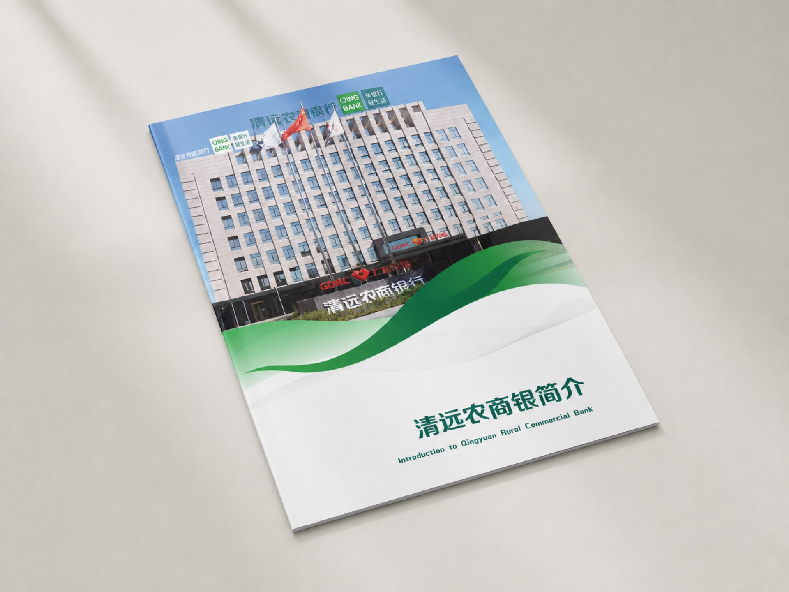
以机构简介、业务数据、助农实践与公益责任构成清晰完整的企业画册。
查看项目 →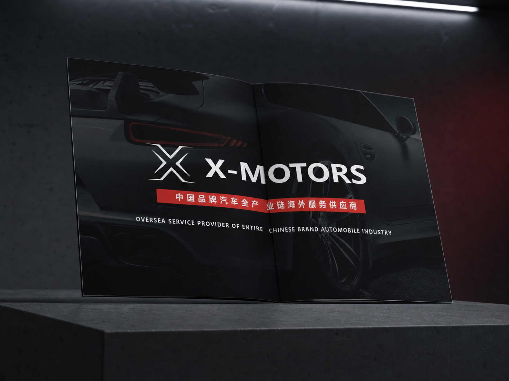
完整呈现核心业务、全球布局、经销体系与海外团队的国际汽车服务画册。
查看项目 →平面 / 视觉设计师
负责品牌、活动及城市文化项目的视觉设计与落地，参与四川医药健康产业专题对接活动、成都世运会相关场馆与赛区视觉、远望集团品牌系统、龙泉驿城市文创及成都中医药大学"太极杯"IP设计。
平面设计师 / 平面设计师（文化部）
围绕企业品牌传播与商业营销场景，完成画册、宣传册、公众号长图、节日营销与电商视觉，并参与企业 VI 应用、H5 页面、校园文化墙及产品包装设计。
企划设计
负责招生传播与校园环境视觉，完成海报、折页、门头、名片及文化墙等设计；针对不同活动快速建立系列物料，兼顾品牌统一、阅读效率与制作落地。
平面设计实习 / 品牌设计实践
大三开始承接线上设计与漫画项目，在杭州代创参与插画、Logo、海报、名片和画册等商业任务；随后参与四川上首的品牌 VI 系统与应用延展，逐步建立商业设计与品牌规范意识。
动画 / 本科
本科阶段系统学习美术基础、造型与色彩、视觉构成及数字设计软件，建立审美判断、图形表达与视觉叙事基础；在校期间主动拓展品牌与平面设计能力，并从大三开始进入商业设计实践。